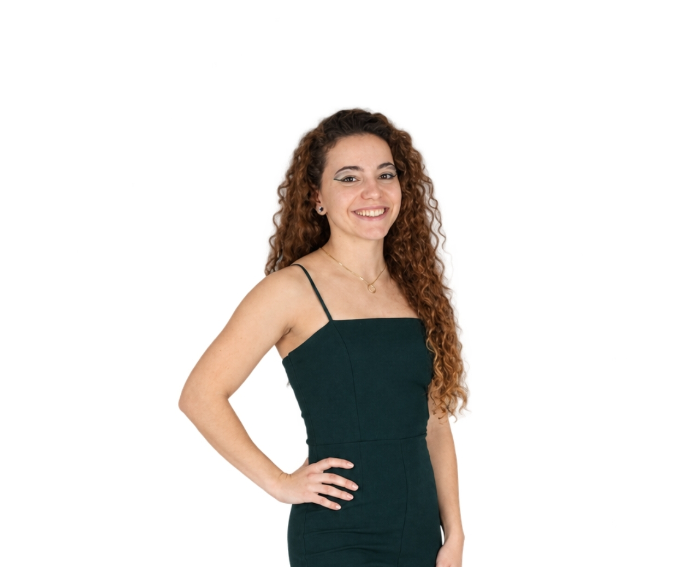
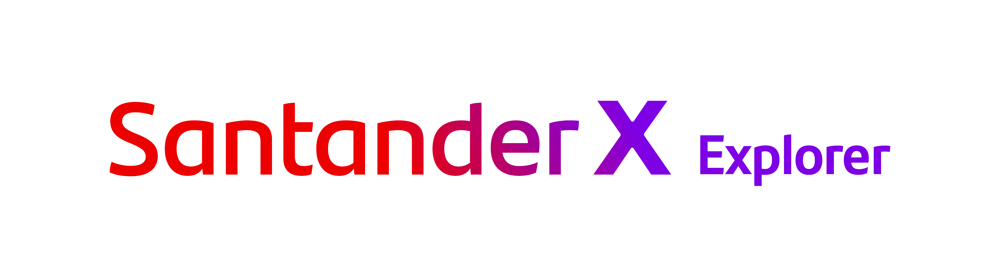
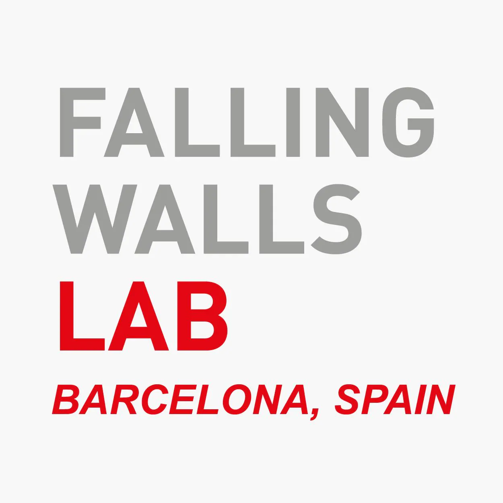
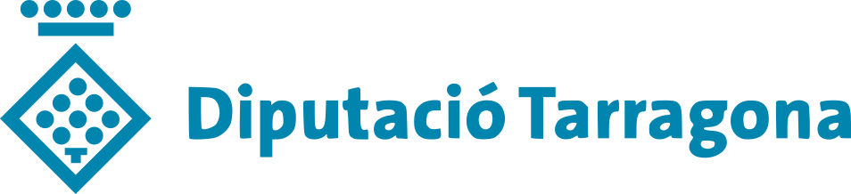

Una plataforma digital de salud que acompaña al paciente en su día a día y convierte las dificultades que surgen fuera de consulta en información relevante para el profesional sanitario.
De personas en España sin apoyo entre consultas, tomando decisiones que impactan en su salud.
pacientes crónicos no sigue correctamente su tratamiento.
Pérdida económica anual estimada por la no adherencia en el sistema sanitario español.
No nos centramos únicamente en si un paciente toma o no su medicación. Nos centramos en detectar y abordar las causas que pueden llevarle a tomar decisiones que perjudiquen su salud.
El sistema identifica las dificultades que interfieren con el tratamiento en la vida cotidiana.
Proporcionar apoyo cuando aparecen dudas o dificultades, antes de que se conviertan en un problema mayor.
Ayudar al profesional sanitario a comprender mejor qué ocurre entre consultas y aprovechar mejor el tiempo de atención.
Queremos que cada persona pueda encontrar apoyo cuando lo necesita, con la tranquilidad de acceder a información basada en fuentes sanitarias verificadas.
Queremos evitar que las dudas y dificultades que aparecen en el día a día condicionen decisiones que puedan afectar a su salud sin el apoyo adecuado.
Y queremos que el profesional sanitario pueda conocer mejor lo que ocurre entre consultas para comprender a sus pacientes y ofrecerles una atención más completa.
Adhere es una herramienta clínica digital que identifica la causa raíz de la falta de adherencia mediante un seguimiento continuo y traslada esa información clave al profesional sanitario. A diferencia de otras herramientas, facilita las intervenciones tempranas y optimiza las decisiones clínicas.
Afronta su tratamiento y sus dudas en su día a día, fuera del entorno clínico, donde suelen surgir las barreras de adherencia.
La plataforma brinda apoyo continuo y realiza un seguimiento activo para identificar la causa raíz de las dificultades del paciente.
La información se procesa con base en guías clínicas y fuentes científicas verificadas, traduciéndose en métricas comprensibles.
El profesional sanitario recibe información clave que facilita la intervención temprana y optimiza la atención en consulta.
Co-creada por profesionales sanitarios y pacientes bajo colaboraciones y una rigurosa investigación para garantizar su adecuación clínica real en el día a día.
La información de Adhere se desarrolla a partir de fuentes sanitarias y científicas verificadas, como guías clínicas, protocolos, organismos y sociedades profesionales.

Para mí, la medicina siempre ha sido cuidar de personas, no solo tratar enfermedades. Y cuidando de las personas que más quiero fue cuando vi un problema que antes no había visto.
Investigar esa duda me llevó a descubrir la magnitud de un problema histórico de la medicina y a diseñar Adhere, con el propósito de estar ahí justo donde se toman las decisiones que influyen en la salud.
Programa pre-incubación Santander X Explorer
Ganador de Santander X Explorer Tarragona 🏆
Mención de honor como finalista en Santander X Award 2025-2026 🏆
Finalista en Falling Walls Lab Barcelona
Financiación semilla a través del premio del Consejo Social de la URV a las Mejores Ideas Emprendedoras Universitarias, con el apoyo de la Diputació de Tarragona 🏆
Programa de aceleración de MentorDay completado + mentoría



Estamos abiertos a colaborar con profesionales sanitarios, organizaciones y pacientes para seguir desarrollando Adhere.